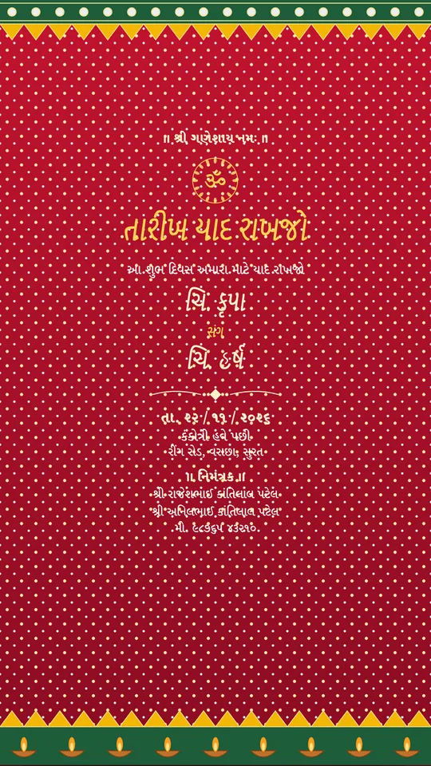
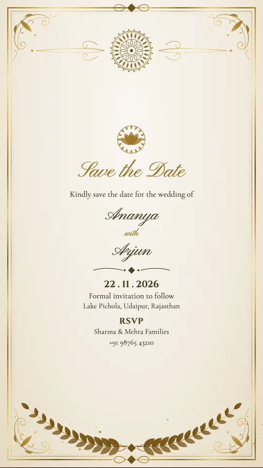
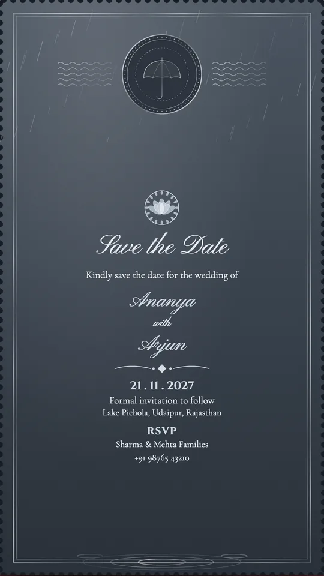
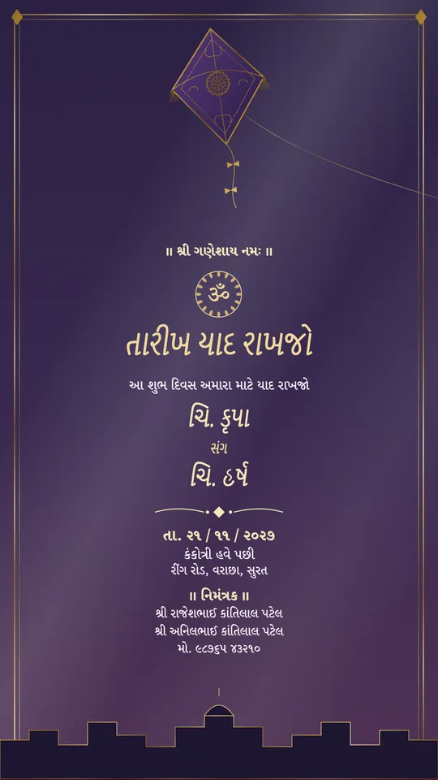
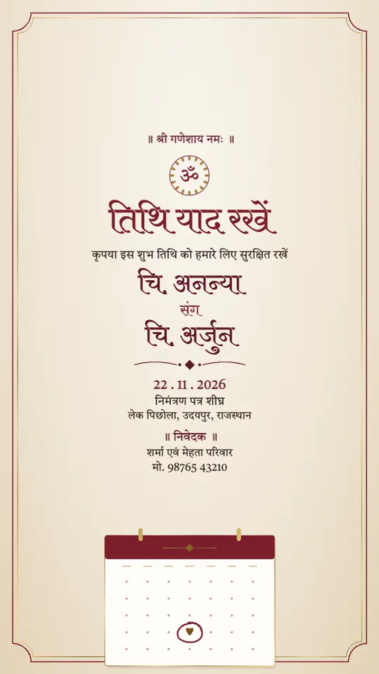
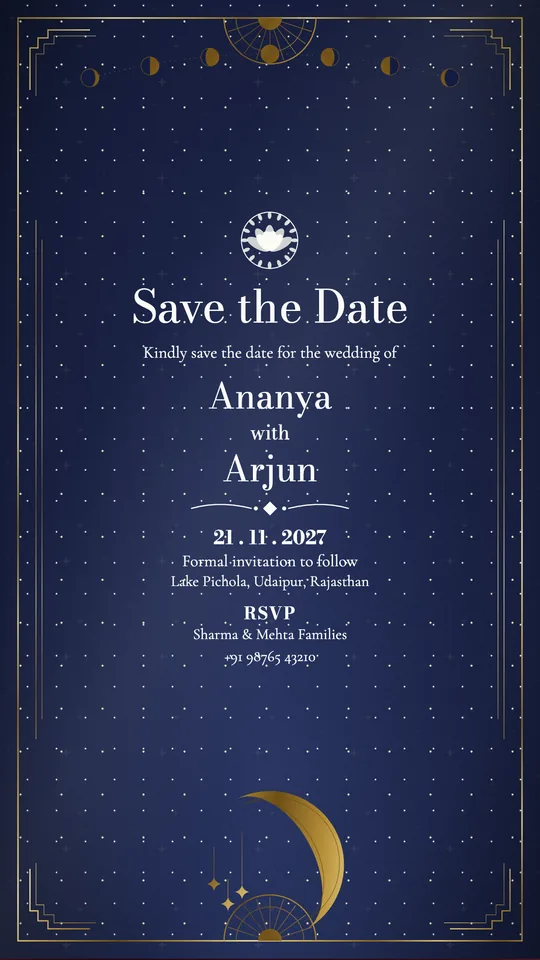

Save the Date · Ring Ceremony · Haldi · Mehendi · Sangeet · Wedding (Vivah) · Reception
Save the date cards
A save-the-date goes out months before the wedding card, often before the venue or the full schedule is fixed. Its job is simple: tell people the date and the city so they can book leave and travel. Keep it short, the couple's names, the date and the place, and leave the details for the invitation. For families with relatives abroad, it is the card that matters most, because flights and visas need months of notice.
Most save-the-dates are sent digitally, so the phone format is the one to download first. If you send a printed one too, use the same design as your wedding card so the two feel like a set.
Every design below opens in the editor with sample wording for this ceremony. You can switch any card to English, Hindi, Marathi, Gujarati, Punjabi or Tamil once it is open.

Bandhani Festive Invite
Gujarati · Lord Ganesha
Bandhani is the tie-dye of Gujarat and Rajasthan, and this card is covered in its tiny white dots on a deep red ground. A saw-tooth border runs across the top, and a green band of lit diyas closes the bottom edge. The sample text is in Gujarati and opens with a Ganesha line, so it reads like a small kankotri announcing the date. It suits families who want the save-the-date to feel festive rather than formal.

Ivory Monogram Minimal
English · Floral, no deity
A quiet, formal card on warm ivory paper with a fine grain. A gold lace medallion sits at the top and two gold laurel sprigs sweep in from the bottom corners. Names are set in a flowing Pinyon script, with headings in Cinzel capitals. There is no religious line, which makes it a good choice for an English save-the-date sent to friends, colleagues and family abroad.

Monsoon Postcard
English · Floral, no deity
Slate blue-grey with fine rain lines across the background, an umbrella medallion at the top and small wave marks on either side. It feels like a postcard written on a rainy afternoon, which makes it a natural fit for a wedding in July to September or a couple who met in the monsoon. English text, with no religious line.

Uttarayan Kite Festival
Gujarati · Lord Ganesha
Uttarayan, the January kite festival, is a huge occasion in Gujarat, and this card borrows its sky: a purple dusk, one diamond kite trailing its string, and a skyline of old-city pol rooftops along the bottom. The sample text is in Gujarati with a Ganesha invocation. Use it for a winter wedding, or for any Ahmedabad or Surat family who wants a card that feels local.

Calendar Circle
Hindi · Lord Ganesha
A cream card with a small desk calendar at the bottom and the wedding date marked with a heart. The idea is literal, and that is the point: guests see the date before anything else. Text is in Hindi in maroon, opening with a Ganesha line, under the heading तिथि याद रखें (remember the date).

Celestial Moon Phases
English · Floral, no deity
Deep navy blue scattered with tiny stars, a row of moon phases across the top and a gold crescent at the bottom. It suits an evening or night wedding, or couples who chose their date by the moon. The English text sits in gold script and serif, with no religious line.
Not sure what to write? Read the wording guide for every ceremony.